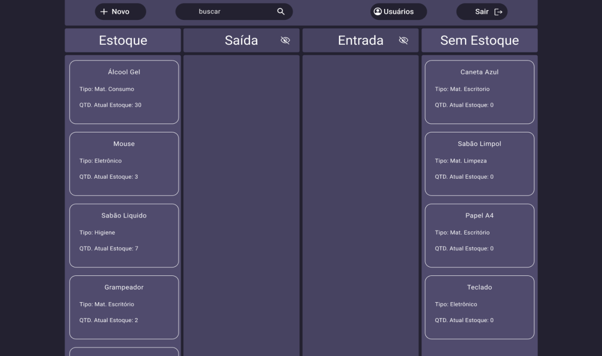
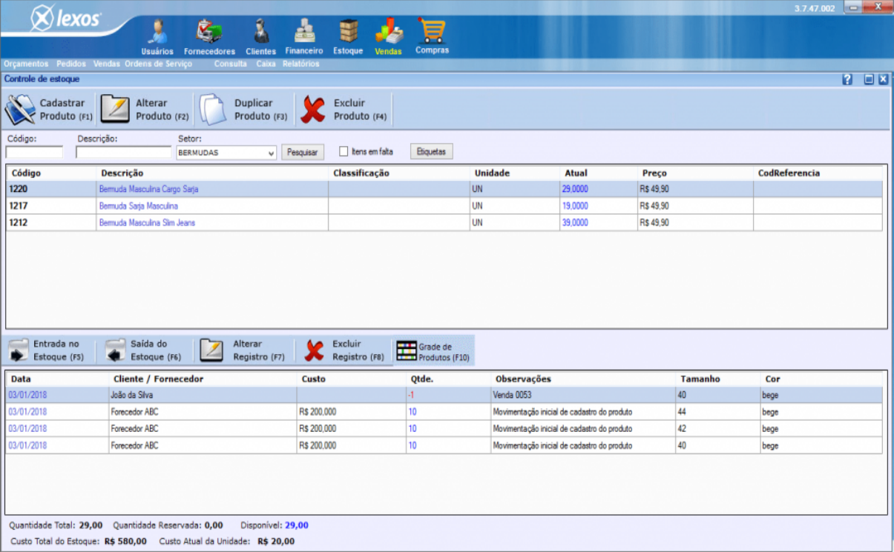
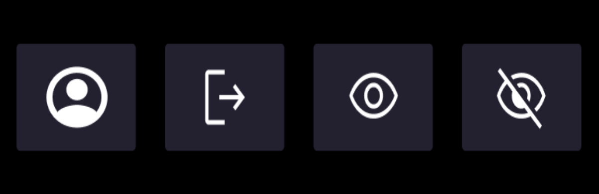
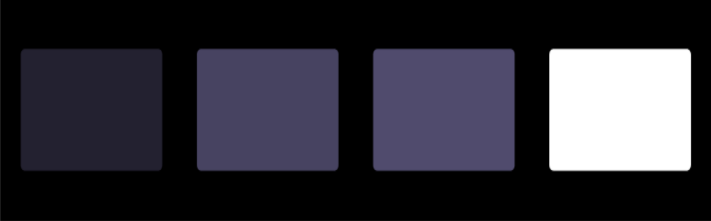
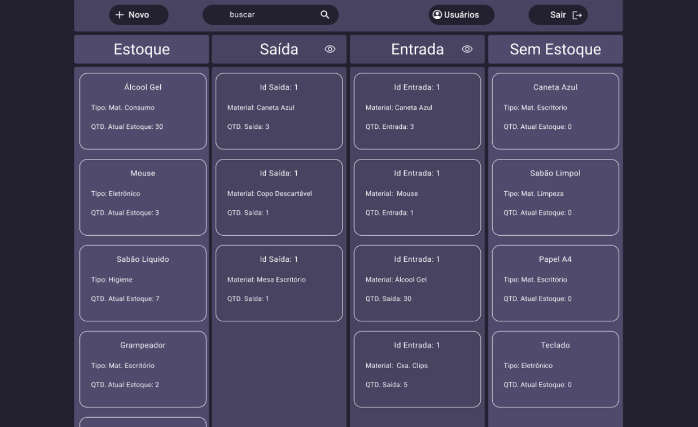
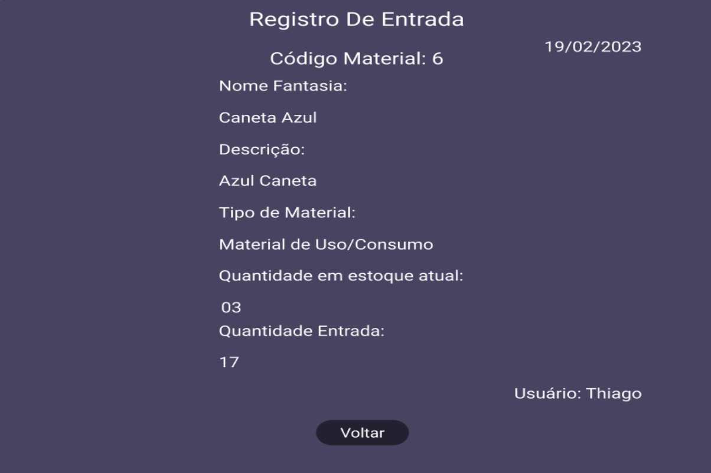
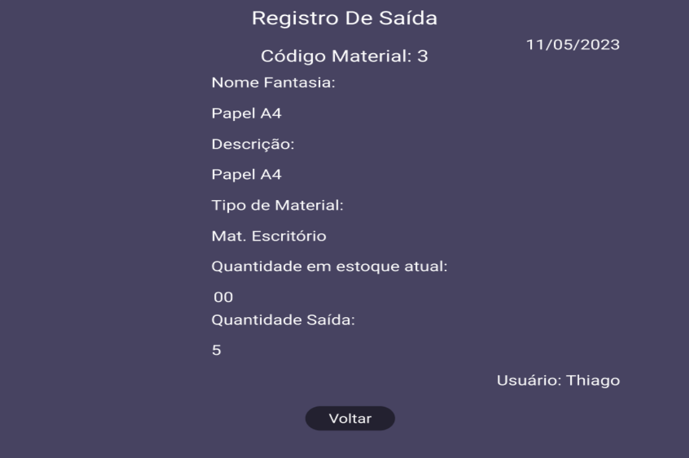
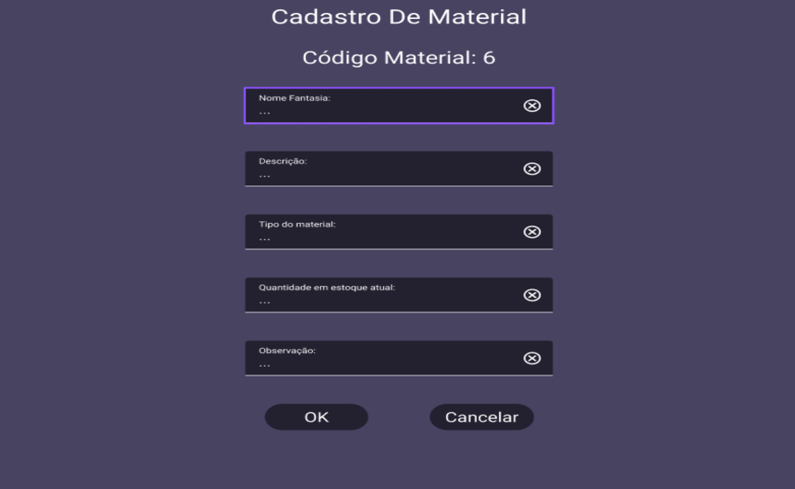
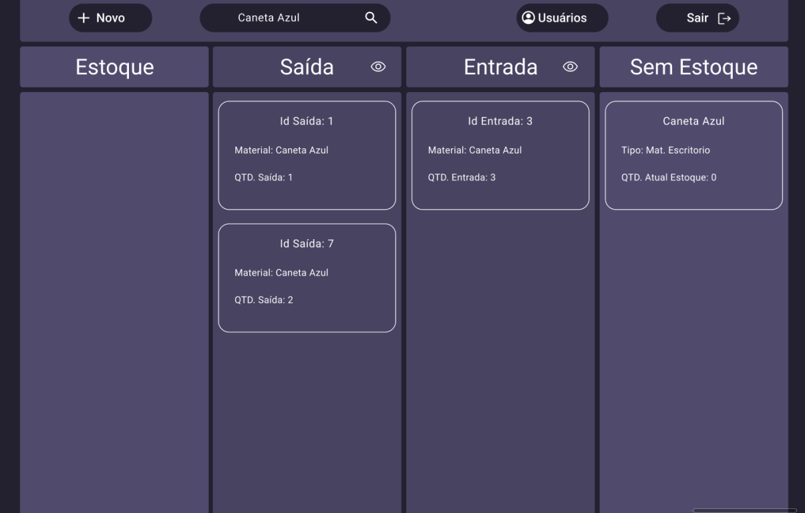
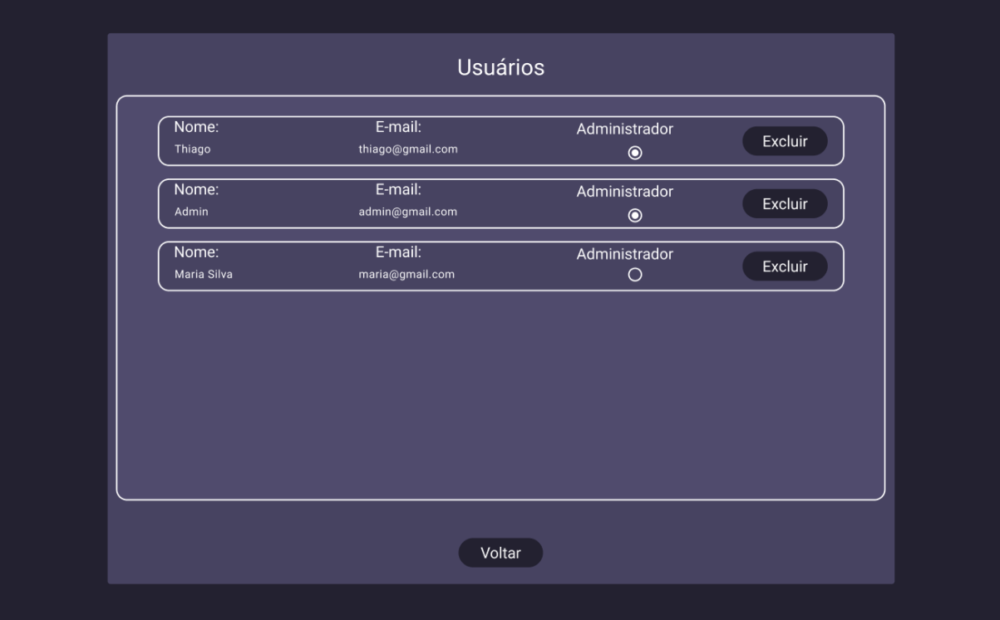

DESENVOLVIMENTO DE UM PROTÓTIPO DE UMA INTERFACE COM FOCO EM UX PARA O SEGUIMENTO DE GERENCIAMENTO DE ESTOQUE¹
Thiago Carvalhaes de Lima²
Gilberto Pereira Salgado Junior³
RESUMO
Tendo em vista uma otimização do gerenciamento de estoque nas mais diversas empresas e estabelecimentos onde o armazenamento de bens materiais em estoque é uma parte de grande importância para o seu funcionamento. Este trabalho propõe uma forma aprimorada de efetuar esse gerenciamento através da criação de um protótipo com base nos moldes do método Kanban, o qual é voltado para a UX. Após a análise de sistemas de gerenciamento de bens armazenados em estoque disponibilizada atualmente e identificado um padrão entre eles, foi desenvolvido um protótipo através da ferramenta Figma com o auxílio do Material Design 3, o qual tem como o objetivo de fugir da forma tradicional existente no mercado atual, e a possível a otimização desse processo, com uma interface dinâmica e com um foco na usabilidade, o que por sua vez, cria uma maior facilidade e agilidade no uso cotidiano, uma vez que o seu desenvolvimento foi baseado em foco na experiência do usuário.
Palavras-chave: Prototipação; UX; Design de interface; Gerenciamento de estoque; Kanban.
1 INTRODUÇÃO
Partindo da importância do estoque para as organizações, pois são em sua composição os bens materiais mantidos por uma organização no intuito de suprir futuras demandas, podendo se encontrar nas mais diversas formas, também obtendo os mais diversos usos e aplicações nas organizações.
“O controle ou gestão de estoques compreende todas as atividades, procedimentos e técnicas que permitem garantir a qualidade correta, no tempo correto,de cada item do estoque ao longo da cadeia produtiva: dentro e fora das organizações” (Silva, 2004).
Uma organização deve ter um bom planejamento de recursos organizacionais visando a gestão eficiente dos estoques, podendo assim melhorar tanto o nível de seus serviços e se proteger contra a oscilação na demanda e instabilidade eventuais no mercado. Para o auxílio nesse planejamento organizacional, não é incomum as empresas e estabelecimentos voltarem seus olhos para a sistemas desenvolvidos para o controle e organização no estoque, entretanto ao efetuar uma busca por tais sistemas pode-se notar que na grande maioria dos casos eles tendem a seguir um padrão, muitas vezes voltando-se para o funcional e não colocando um empenho aprofundado na UX (User Experience - Experiência do Usuário) com o seu produto.
“As necessidades dos usuários são tratadas muitas vezes de maneira informal ou negligenciada, quando se trata de requisitos relacionados à UX." (SOUZA et al. 2020).Tendo em objetivo o desenvolvimento de um protótipo de uma interface apresentando uma nova forma para o auxílio desse controle ou a gestão desses estoques. Tendo como base o método Kanban, o qual pretende-se apresentar um forma diferente de efetuar o controle desses bens materiais. Sendo facilitado pois contará com uma interface voltada a UX otimizando e diferente das existentes no mercado até o presente momento.
1 Artigo submetido em 30/06/2023, e apresentado à Libertas – Faculdades Integradas, como parte dos requisitos para obtenção do Título de Bacharel em Sistemas de Informação, em 14/06/2023.
2 Graduando em Sistemas de Informação pela Libertas – Faculdades Integradas – E-mail: 006205@libertas.edu.com.
3 Professor-orientador. Mestre em Linguística - Semiótica Francesa. Docente na Libertas – Faculdades Integradas– E-mail: gilbertojunior@libertas.edu.br.
1.1 Contexto e motivação
Ao observar a grande importância que é o estoque das mais variadas empresas, desde a uma multinacional que fatura milhões a um pequeno negócio local, nota-se que ele é uma parte fundamental. No entanto, em alguns casos acaba por se tornar algo muito difícil de se ter o controle, o qual existe os mais diversos sistemas para auxiliar nessa questão.
Ao efetuar uma análise dos sistemas que se tem por objetivo o auxílio e a facilitação do controle de estoque, foi identificado que os mesmos tendem a seguir um certo padrão de usabilidade e funcionando, que por sua vez acaba não tendo uma variabilidade de opções para o mercado atual.
1.1.1 Contribuições esperadas
Com a construção do protótipo se almeja inserir no mercado uma nova forma de organização de sistemas voltado para o gerenciamento dos materiais em estoque, que se difere dos demais. Para isso, foi seguido neste projeto os padrões de design criados pelo Material Design 3, voltado a sua atenção para que a experiência do usuário seja satisfatória e confortável no uso diário. Ademais, que seja fácil de compreender o seu funcionamento e operação desde o primeiro contato com o protótipo.
1.2 Objetivos
Esse trabalho teve como objetivo elaborar um protótipo de uma interface voltada para a experiência do usuário utilizando a metodologia Kanban. Por isso, buscou apresentar uma nova perspectiva referente ao ramo dos sistemas de gerenciamento de bens materiais armazenados estoque das mais diversificadas empresas e estabelecimentos que tenham a necessidade de estarem efetuando o gerenciamento e o fácil controle de seus bens armazenados.
1.2.1 Geral
Ao fim desse trabalho foi desenvolvido um protótipo de uma interface com o foco na experiência do usuário que se difere das opções oferecidas até o presente momento, com aplicação em pequena, média e larga escala e nos mais diversos tipos de empresas e estabelecimentos que possam vir a necessitar de um sistema onde poderá ter o melhor controle de seus bens armazenados. Onde será voltada a fuga do padrão já existente e constantemente encontrada no mercado atual.
1.2.1 Específicos
Tendo como base o objetivo geral proposto, foram definidos os seguintes objetivos específicos:
- Efetuar a análise de sistemas de gestão de estoque disponíveis atualmente, no intuito de estudá-los e compreender as necessidades básicas para o desenvolvimento.
- Desenvolver a camada visual do funcional do sistema que se difere do que se encontra disponível até o presente momento.
- A diferenciação e o distanciamento dos projetos já existentes no mercado atual.
- Ter uma experiência única e de fácil compreensão para os usuários.
- Efetuar uma gestão dos bens materiais armazenados em estoque com uma aplicação voltada para a experiência do usuário.
- A elaboração de um novo padrão de sistemas de gerenciamento de bens empresariais armazenados.
- Aplicação de larga escala e replicável aos mais diversos estabelecimentos e empresas dos mais diversos portes.
1.3 Organização do trabalho
O presente artigo se encontra dividido em cinco seções. A seção dois que tem em seu conteúdo os fundamentos e os trabalhos relacionados referente ao artigo. A seção três consiste nos materiais e métodos que foi empregada no desenvolvimento do presente artigo. A seção quatro tem em seu conteúdo os resultados obtidos ao efetuar o presente artigo. Na quinta parte as considerações finais.
2 FUNDAMENTOS E TRABALHOS RELACIONADOS
2.1 Fundamentos
Este trabalho tem como fundamento os conceitos relacionados à prototipação de software, user experience, Kanban, design de interface. E gerenciamento de bens armazenados em estoque. Contudo, o foco é direcionado principalmente para os principais, que são: user experience, prototipação de software e Kanban, os pilares que constituem toda a finalidade do presente artigo.
2.1.1 User experience
O termo ”User experience (UX)” foi criado em meados da década dos anos de 1990 por Donald Norman, sendo um professor e escritor também conhecido como um dos maiores teóricos do design, passou a empregar o termo Experiência do Usuário para se referir a um conjunto de elementos e fatores relativos à interação das pessoas com produtos ou sistemas. O desenvolvimento de sistemas na atualidade exige que as empresas voltem a sua atenção para a questão da experiência do usuário (MARTINELLI et al. 2022).
“O UX design vem para colocar quem é mais importante no centro de tudo: o usuário. Não mais o produto, o lucro, ou o serviço. Tudo isso é muito importante e faz parte do processo de criação. Entretanto, o principal foco é quem terá que lidar com tudo isso, ou seja, as pessoas” (AELA, 2019, s. p.).
Cada usuário tem a sua própria experiência sobre sua própria ótica,onde os mesmos obtêm seus próprios pontos de vista, o que por sua vez ocasiona nas variadas emoções dentro de sua subjetividade (Norman, 2006).
Cada usuário pode vir a ter uma reação e as mais diversas emoções ao presenciar um sistema, dependendo do conjunto que foi utilizado em sua composição ou o estado presente do em que se encontra aquele que vai efetuar o uso, para garantir um maior conforto na experiência dos usuários, é necessário para que a empresa volte a sua atenção para como será disposto esta experiência para o usuário, pois ao fim não faz sentido utilizar algo que traga desconforto e emoções razoavelmente negativas (Norman, 2006).
A UX desempenha um papel crucial no desenvolvimento de produtos e sistemas. Colocar o usuário como foco central é essencial para atender suas necessidades e expectativas (AELA, 2019, s. p.). Considerar as emoções e perspectivas individuais dos usuários é fundamental para criar uma experiência positiva. Empresas devem dedicar atenção à disposição dessa experiência, visando o conforto e evitando emoções negativas. Priorizar o UX resulta em produtos funcionais e satisfatórios para os usuários (Norman, 2006).
2.1.2 Prototipação de software
A prototipação na óptica de sistema de informação, trata-se da construção rápida e simplificada de uma forma visual do sistema pretendido, tendo em seu objetivo analisar, testar, viabilizar e ter uma visão do que possa vir ser necessária a adicionar e a alterar. Tal técnica geralmente tem sua utilização na lapidação de requisitos e definição clara do intuito e do que se deve constituir a aplicação, visando o objetivo de tornar a ideia desenvolvida até então, em um sistema completo, físico e funcional (SOMMERVILLE, 2003). Tanto protótipos quanto modelos conceituais podem a vir ser elaborados nas mais diversas mídias, formados e ferramentas, tendo em sua composição elementos abstratos que por sua vez se interligam entre si, interligando até mesmo com software de produção de imagens vetoriais.(Santa, 2010).
2.1.3 Kanban
O Kanban se trata de um sistema japonês desenvolvido por um engenheiro da Toyota Taiichi Ohano em 1953, utilizando cartões no intuito de representar a situação do estoque, se está cheio ou vazio e que são movidos e alocados em um quadro conforme se encontra o estado atual do material em sua estoque (Peinado e Aguiar, 2007).
Um sistema Kanban é uma forma de encontrar o equilíbrio entre a demanda necessária de trabalho para a criação entre a capacidade de dar o início a um novo ciclo de trabalho (Senapathi e Drury‐Grogan, 2021).
2.2 Trabalhos relacionados
Oliveira (2018) criou uma aplicação web SEVEN com o objetivo de suportar os processos de uma empresa de pequeno porte, de forma a aumentar a sua produtividade. Em sua aplicação contém a possibilidade da gestão dos produtos ofertados, dos pedidos recebidos, das compras, da produtividade dos fornecedores e outras funcionalidades. A aplicação foi construída utilizando um conjunto de APIs da plataforma web com o nome de Web Components, permitindo a criação de tags HTML reutilizáveis, personalizadas e encapsuladas. Silva (2021) teve por seu objetivo desenvolver uma aplicação web que unifique as informações de estoque do Laboratório de Nanobiotecnologia e agilize a busca indicando informações complementares sobre armazenamento do produto pesquisado.
Entretanto, o presente artigo se difere dos artigos mencionados acima pois foi desenvolvido um protótipo de uma interface focada na UX e não uma aplicação web em si voltado para a produtividade, que é o caso dos artigos de Oliveira (2018) e Silva (2021). O presente artigo também pretende ser replicável para diversos tipos de estabelecimentos, o que não é o caso do artigo de Silva (2021) e não pretende-se limitar o porte de empresa, o que ocorre no caso de Oliveira (2018).
Macas e Obando (2022) desenvolveram um protótipo de sistema de gestão de estoque para uma empresa de lavagem e lubrificação de pequeno e médio porte. O sistema inclui funções de gerenciamento de estoque, pesquisa de produtos, gestão de clientes, fornecedores e usuários, além de geração de recibos e relatórios. A metodologia Kanban foi empregada na construção desse sistema. No entanto, o foco do trabalho é limitado a um ramo específico de empresa e um porte específico, diferindo do objetivo deste artigo, que busca aplicação em empresas de diferentes portes e nichos.
3 MATERIAIS E MÉTODOS
Nesta seção serão apresentados os materiais e a metodologia, de forma detalhada todas as etapas que fizeram-se necessárias para elaboração da proposta adotada para que o objetivo fosse atingido.
3.1 Materiais
Nesta seção serão apresentados os materiais que contribuíram para condução deste trabalho.
3.1.1 Figma
Tornando a sua visão de design open source, o Figma é uma ferramenta para o auxilio no criação de protótipos e soluções, disponibilizando uma versão sem custos permitindo um uso com um grande enfoque na colaboratividade entre equipes. Tendo em suas funções a possibilidade de compartilhamentos de projetos e tendo como guia sua comunidade constituída na ferramenta, a qual nasceu em outubro de 2019, quando obteve a possibilidade de criação de projetos públicos e compartilhá-los com diversos usuários, os quais podem interagir ativamente compartilhando informações entre eles. (FIELD, 2019).
A ferramenta Figma dispõe de diversas funcionalidades para a criação de protótipos, tendo uma versão disponível sem custo que foi utilizada ao longo do desenvolvimento do protótipo. Além de sua versão totalmente gratuita, o Figma não se limita a isso, oferecendo uma grande facilidade de uso por meio de ferramentas desenvolvidas pela comunidade e de fácil incorporação aos projetos próprios. O que foi o caso da incorporação do protótipo que foi desenvolvido neste trabalho, com os critérios e componentes disponível pela Google no Material Design 3.
O compalhimanteto da área de trabalho é simples e rápido, oferecendo diversas opções que facilitam o trabalho em equipe, também possuindo a opção de adicionar comentários por parte dos usuários que têm o acesso ao projeto, facilitando a interação entre os envolvidos.
3.1.2 Material Design 3
O Material Design 3 consiste na versão mais atual disponível do sistema de design de código aberto suportado por designers e desenvolvedores do Google. Tendo em seu conteúdo orientações detalhadas e descritivas de UX, também inclui em sua biblioteca orientações de implantação de componentes da interface de usuário para diversas plataformas, tais como: o Android, Flutter e Web. O Material Design 3 oferece um guia de suporte sobre como utilizar os componentes e estilos, já padronizada pela Google, e disponíveis no site Material.io.Em sua biblioteca conta também com o auxílio Google Fonts, que consiste em um catálogo de fontes de código aberto facilita a integração perfeita de fontes e ícones expressivos, para ser exploradas e testadas em mais de 135 idiomas (Google, 2022). A Figura 01 apresenta a tela principal do protótipo desenvolvido, tendo em sua aplicação os componentes do Material Design 3, sendo eles: os botão, a tipografia sugerida pelo Material e a barra de tarefas.
Para os ícones, oferece uma disponibilidade de uma folha de adesivos, que estão disponíveis com 5 estilos e uma variedade de tamanhos e densidades, gerenciada pela equipe do Google Fonts. Tais ícones são criados com base nos princípios básicos de design e nas métricas das diretrizes do Material Design e a folha de adesivos do ícone é mantida regularmente e as atualizações são publicadas quinzenalmente.
Figura 01 - Tela Principal do protótipo desenvolvido com o Material Design 3
Fonte:Do Autor (2023).
3.2 Métodos
Para elaboração deste projeto, 4 etapas foram necessárias, (Conforme na figura 02) , as quais serão descritas a seguir.
Figura 02 - Diagrama das etapas conduzidas.
Fonte:Do Autor (2023).
Primeiramente, foi elaborada uma pesquisa no mercado referente aos sistemas disponíveis para o gerenciamento dos bens materiais em estoque. Ao fim da análise de 15 sistemas, foi verificado que apesar de suas diferenciações de design, afinal foram elaborados e desenvolvidos por diferentes responsáveis e em diferentes datas, foi identificado uma certa semelhança referente à construção dos mesmos, tal semelhança seria a base em formato de lista que os sistemas analisados tendem a utilizar (Conforme a Figura 03).
Na segunda etapa, após a conclusão da análise e a identificação dessa tendência dos sistemas desse segmento, foi dado início a elaboração de um protótipo, com base nos fundamentos do método Kanban para a utilização do design e de sua funcionalidade em sua estrutura.
Através da utilização da ferramenta Figma, foi efetuado a elaboração do mesmo, utilizando o padrão de design de criação pela Google, o Material Design 3, o qual foi incorporado o seu plugin disponível para a comunidade a ferramenta Figma. O Material Design 3 fornece os Assets já em seu padrão de design, além de o mesmo também fornecer todo o padrão que o protótipo deve seguir, o que foi o caso do protótipo gerado, valendo a pena salientar que alguns dos ícones presentes no protótipo desenvolvido não se encontravam disponivel na biblioteca do Material Design 3, neste caso foi necessário a importação de ícones externos, o qual foram efetuados os downloads do site fonts.google.com, que pode ser verificado na Figura 04.
A terceira etapa englobou todo o processo de criação de telas utilizando as ferramentas e elementos disponíveis no Figma, o mesmo se aplica a parte de prototipação e a animação das mesmas.
Na quarta etapa fez-se necessária a definição da paleta de cores a ser utilizada no protótipo. Para isso, foi utilizado a cor base de nome Raising Black. Tal cor foi utilizada para a composição da cor de fundo da tela principal, e através do site coolors.co foi verificado as suas variações de tonalidades, as quais foram incorporadas aos outros componentes presentes no protótipo desenvolvido. Confira a Figura 05 com a paleta de cores utilizada.
Figura 03 - Exemplo de um sistema analizado
Fonte: lexos.com(2023).
Figura 04 - Ícones externos do site da Google
Fonte: Do autor(2023).
Figura 05 - Paleta de cores
Fonte: Do autor(2023).
4 RESULTADOS
Ao fim foi alcançado um protótipo de uma interface com as funcionalidades básicas de um sistema de gerenciamento de bens armazenado, utilizando a ferramenta Figma em seu desenvolvimento e os padrões de design e usabilidade que compõem a experiência do usuário aplicada a fórmula da metodologia de funcionamento que compõe o método Kanban.
Tendo em suas funcionalidades a página inicial onde pode ser identificado a utilização do método Kanban, a qual informa os materiais em estoque e com o estoque negativo, a opcionalidade de verificar as entradas e saídas efetuadas no sistema e de efetuar o processo de registar as mesmas, o qual vai abrir a tela de aplicação para esses registros. Apresentado anteriormente na Figura 01, poderá verificar a página inicial e principal do sistema. Na Figura 06 está representado um exemplo de exibição de históricos de entrada e saída. Na Figura 07 um exemplo de um registro de uma entrada e na Figura 08 de uma saída do estoque.
Ainda na página inicial, é possível efetuar uma inserção de um novo cadastro de um produto ou material desejado através do botão novo, o qual após pressionado, vai abrir a tela de cadastro, apresentado na Figura 09, que deverá ser informado seus dados para o registro no sistema.
O protótipo também conta com a opção de uma ferramenta de busca por palavra-chave, a qual vai retornar as informações de entrada e saída referente à palavra informada, e também vai mostrar se o material buscado está em estoque ou se há a necessidade de restabelecer, visualize na Figura 10. Ainda na página inicial, há o botão usuário, o qual os usuários com acesso de administrador poderá contar com a opção de ceder a outro usuário a opção de acesso administrativo ou estar efetuando a exclusão de usuários, através da tela de usuários representado na Figura 11.
Figura 06 - Página principal com a visualização de histórico habilitada
Fonte: Do autor(2023).
Figura 07 - Exemplo do registro de uma entrada
Fonte: Do autor(2023).
Figura 08 - Exemplo do registro de uma saída
Fonte: Do autor(2023).
Figura 09 - Cadastro de material
Fonte: Do autor(2023).
Figura 10 - Exemplo de busca
Fonte: Do autor(2023).
Figura 11 - Tela de usuários
Fonte: Do autor(2023).
5 CONSIDERAÇÕES FINAIS
Foi gerado um protótipo para o auxílio das mais diversas empresas e estabelecimentos e seus diferentes portes, utilizando a metodologia do sistema Kanban, o que possibilitou a disponibilização de um sistema que se difere de seus concorrentes inseridos no mercado atual.
Utilizando todas as diretrizes e orientações disponibilizadas pelo Material Design 3, garantindo assim a User Experience e colocando no centro disso tudo o que é mais importante num quesito de desenvolvimento de sistema, o usuário.
Como se trata de um protótipo, não é exatamente a versão final da produção de um sistema, podendo sofrer alterações no decorrer de seu desenvolvimento e aplicação no âmbito empresarial.
Tendo tal questão em mente, como adições futuras, pretende-se adicionar a funcionalidade de efetuar buscas personalizadas retornando informações mais filtradas facilitando assim para o usuário verificar os registros, tendo os opcionais de período,nome, tipo de material.
Também pretende-se criar uma tela para o cadastro do tipo de material, para uma futura padronização a, fim de facilitar a busca e a identificação. Como os cadastros dos tipos de materiais, ao efetuar o cadastro de um novo material, pretende apresentar para o usuário no campo correspondente, os tipos já castrados a fim de evitar retrabalho. Referente a questão dos usuários como acesso administrativos, pretende-se implantar um maior controle dos demais usuários, como o cadastro dos mesmos com informações que possam vir a ser necessárias e o controle de acesso dos mesmos.